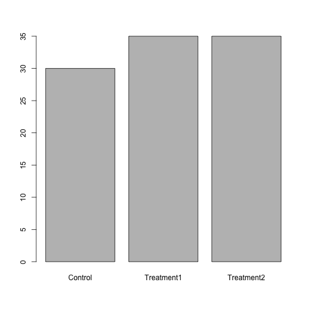
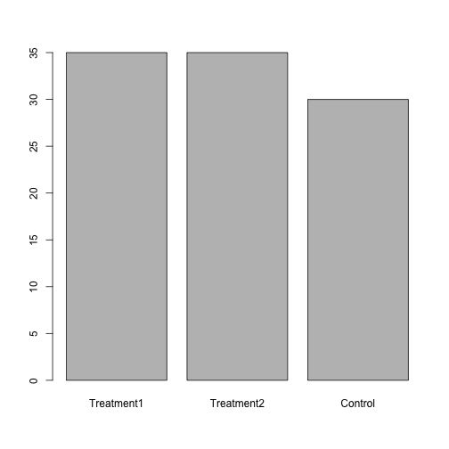
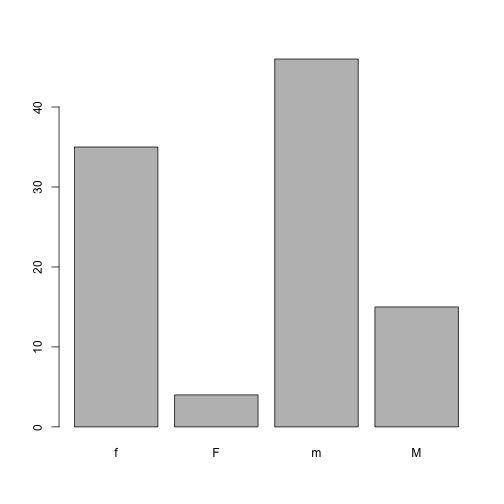
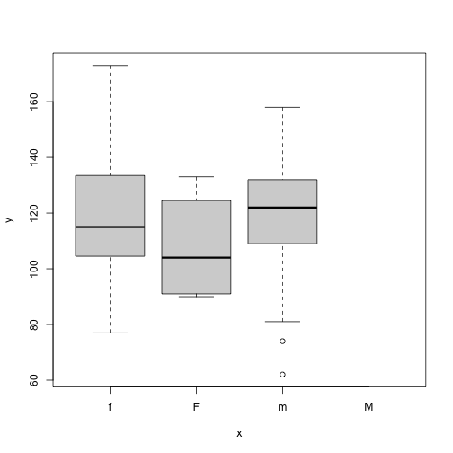
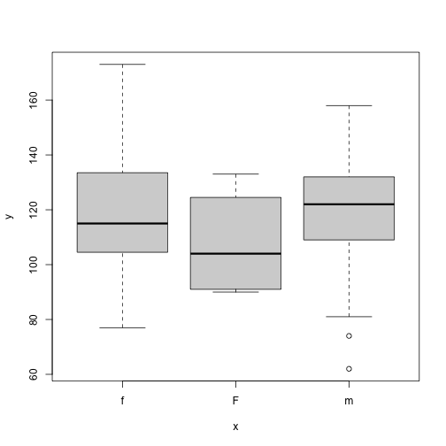

Understanding Factors
Overview
Teaching: 20
Exercises: 0
Questions
Questions
- How is categorical data represented in R?
- How do I work with factors?
Objectives
- Understand how to represent categorical data in R.
- Know the difference between ordered and unordered factors.
- Be aware of some of the problems encountered when using factors.
Factors are used to represent categorical data. Factors can be ordered or unordered and are an important class for statistical analysis and for plotting.
Factors are stored as integers, and have labels associated with these unique integers. While factors look (and often behave) like character vectors, they are actually integers under the hood, and you need to be careful when treating them like strings.
Once created, factors can only contain a pre-defined set values, known as levels. By default, R always sorts levels in alphabetical order. For instance, if you have a factor with 2 levels:
R will assign 1 to the level "female" and 2 to the level "male" (because f comes before m, even though the first element in this vector is "male"). You can check this by using the function levels(), and check the number of levels using nlevels():
levels(sex)[1] "female" "male" nlevels(sex)[1] 2Sometimes, the order of the factors does not matter, other times you might want to specify the order because it is meaningful (e.g., “low”, “medium”, “high”) or it is required by particular type of analysis. Additionally, specifying the order of the levels allows us to compare levels:
food <- factor(c("low", "high", "medium", "high", "low", "medium", "high"))
levels(food)[1] "high" "low" "medium"food <- factor(food, levels = c("low", "medium", "high"))
levels(food)[1] "low" "medium" "high" min(food) # doesn't workError in Summary.factor(structure(c(1L, 3L, 2L, 3L, 1L, 2L, 3L), .Label = c("low", : 'min' not meaningful for factorsfood <- factor(food, levels = c("low", "medium", "high"), ordered = TRUE)
levels(food)[1] "low" "medium" "high" min(food) # works![1] low
Levels: low < medium < highIn R’s memory, these factors are represented by numbers (1, 2, 3). They are better than using simple integer labels because factors are self describing: "low", "medium", and "high"" is more descriptive than 1, 2, 3. Which is low? You wouldn’t be able to tell with just integer data. Factors have this information built in. It is particularly helpful when there are many levels (like the subjects in our example data set).
Representing Data in R
You have a vector representing levels of exercise undertaken by 5 subjects
“l”, “n”, “n”, “i”, “l” ; n=none, l=light, i=intense
What is the best way to represent this in R?
exercise <- c(“l”, “n”, “n”, “i”, “l”)
exercise <- factor(c(“l”, “n”, “n”, “i”, “l”), ordered = TRUE)
exercise < -factor(c(“l”, “n”, “n”, “i”, “l”), levels = c(“n”, “l”, “i”), ordered = FALSE)
exercise <- factor(c(“l”, “n”, “n”, “i”, “l”), levels = c(“n”, “l”, “i”), ordered = TRUE)
Solution
Correct solution is d)
exercise <- factor(c("l", "n", "n", "i", "l"), levels = c("n", "l", "i"), ordered = TRUE)We only expect three cathegories (“n”, “l”, “i”). We can order these from least intense to most intense, so let’s use ordered.
Converting Factors
Converting from a factor to a number can cause problems:
f <- factor(c(3.4, 1.2, 5))
as.numeric(f)[1] 2 1 3This does not behave as expected (and there is no warning).
The recommended way is to use the integer vector to index the factor levels:
levels(f)[f][1] "3.4" "1.2" "5" This returns a character vector, the as.numeric() function is still required to convert the values to the proper type (numeric).
f <- levels(f)[f]
f <- as.numeric(f)Using Factors
Lets load our example data to see the use of factors:
dat <- read.csv(file = 'data/sample.csv', stringsAsFactors = TRUE)str(dat)'data.frame': 100 obs. of 9 variables:
$ ID : Factor w/ 100 levels "Sub001","Sub002",..: 1 2 3 4 5 6 7 8 9 10 ...
$ Gender : Factor w/ 4 levels "f","F","m","M": 3 3 3 1 3 4 1 3 3 1 ...
$ Group : Factor w/ 3 levels "Control","Treatment1",..: 1 3 3 2 2 3 1 3 3 1 ...
$ BloodPressure: int 132 139 130 105 125 112 173 108 131 129 ...
$ Age : num 16 17.2 19.5 15.7 19.9 14.3 17.7 19.8 19.4 18.8 ...
$ Aneurisms_q1 : int 114 148 196 199 188 260 135 216 117 188 ...
$ Aneurisms_q2 : int 140 209 251 140 120 266 98 238 215 144 ...
$ Aneurisms_q3 : int 202 248 122 233 222 320 154 279 181 192 ...
$ Aneurisms_q4 : int 237 248 177 220 228 294 245 251 272 185 ...Notice the first 3 columns have been converted to factors. These values were text in the data file so R automatically interpreted them as categorical variables.
summary(dat) ID Gender Group BloodPressure Age
Sub001 : 1 f:35 Control :30 Min. : 62.0 Min. :12.10
Sub002 : 1 F: 4 Treatment1:35 1st Qu.:107.5 1st Qu.:14.78
Sub003 : 1 m:46 Treatment2:35 Median :117.5 Median :16.65
Sub004 : 1 M:15 Mean :118.6 Mean :16.42
Sub005 : 1 3rd Qu.:133.0 3rd Qu.:18.30
Sub006 : 1 Max. :173.0 Max. :20.00
(Other):94
Aneurisms_q1 Aneurisms_q2 Aneurisms_q3 Aneurisms_q4
Min. : 65.0 Min. : 80.0 Min. :105.0 Min. :116.0
1st Qu.:118.0 1st Qu.:131.5 1st Qu.:182.5 1st Qu.:186.8
Median :158.0 Median :162.5 Median :217.0 Median :219.0
Mean :158.8 Mean :168.0 Mean :219.8 Mean :217.9
3rd Qu.:188.0 3rd Qu.:196.8 3rd Qu.:248.2 3rd Qu.:244.2
Max. :260.0 Max. :283.0 Max. :323.0 Max. :315.0
Notice the summary() function handles factors differently to numbers (and strings), the occurrence counts for each value is often more useful information.
Reordering Factors
The function table() tabulates observations and can be used to create bar plots quickly. For instance:
table(dat$Group)
Control Treatment1 Treatment2
30 35 35 barplot(table(dat$Group))
Use the factor() command to modify the column dat$Group so that the control group is plotted last.
Solution
dat$Group <- factor(dat$Group, levels = c("Treatment1", "Treatment2", "Control"))
barplot(table(dat$Group))
Removing Levels from a Factor
Some of the Gender values in our dataset have been coded incorrectly. Let’s remove levels from this factor.
barplot(table(dat$Gender))
Values should have been recorded as lowercase ‘m’ and ‘f’. We should correct this.
dat$Gender[dat$Gender == 'M'] <- 'm'Updating Factors
plot(x = dat$Gender, y = dat$BloodPressure)
Why does this plot show 4 levels?
Hint how many levels does dat$Gender have?
Solution
dat$Gender has 4 levels, so the plot shows 4 levels.
We need to tell R that “M” is no longer a valid value for this column. We use the droplevels() function to remove extra levels.
dat$Gender <- droplevels(dat$Gender)
plot(x = dat$Gender, y = dat$BloodPressure)
{% include links.md %}
Keypoints
- Factors are used to represent categorical data.
- Factors can be ordered or unordered.
- Some R functions have special methods for handling factors.